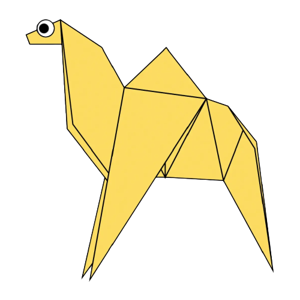
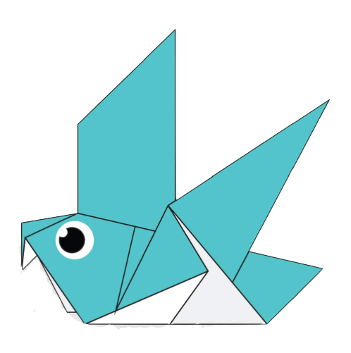
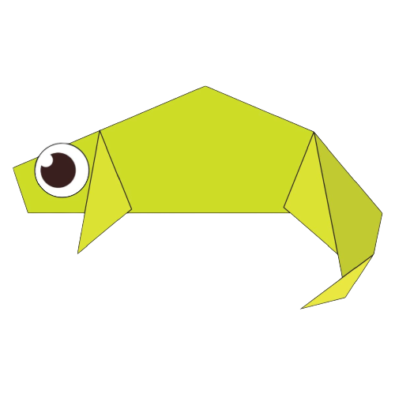

Origami Website!
Click on the images to learn how to make the designs!
>

Facts About Camels:
Camels have thick lips which let them forage for thorny plants other animals can't eat.
Camels have three sets of eyelids and two rows of eyelashes to keep sand out of their eyes.
There are two types of camels: One humped or “dromedary” camels and two humped Bactrian camels.
Facts About Pandas:
Pandas go from pink to white and black (or brown).
Pandas are "lazy" — eating and sleeping make their day.
An adult can eat 12–38 kilos of bamboo per day!

Facts About Pigeons:
Pigeons are incredibly complex and intelligent animals.
Pigeons are highly sociable animals.
Pigeons are renowned for their outstanding navigational abilities.

Facts About Chameleon:
Their feet work like salad tounges.
Almost half of all known species live in madagascar.
Skin crystals enable them to change color at will.